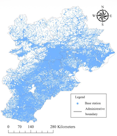
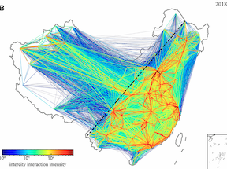
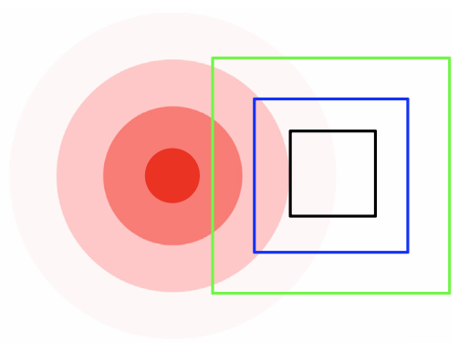

Urban Agglomeration: Demand Understanding
Overview
An urban agglomeration is a network of closely connected cities whose economic activities and transportation systems increasingly operate as an integrated region. Understanding intercity travel demand and city interactions is essential for coordinating infrastructure, improving regional accessibility, and supporting balanced urban development.
Our studies use large-scale mobility data and spatial-interaction models to reveal the structure and dynamics of travel across urban agglomerations:
- Intercity passenger flows are difficult to observe comprehensively with conventional surveys. We extracted trips from mobile phone call detail records in the Beijing–Tianjin–Hebei region and constructed hub-based weighted networks, revealing a power-law concentration of travel demand among a small number of transportation hubs[1].
- Conventional gravity models for intercity interaction require parameters to be specified or calibrated. We developed a parameter-free Interactive City Choice model based on destination opportunities and transportation-network travel times, then applied it to 339 Chinese cities to quantify how network changes reshaped intercity interaction from 2005 to 2018[2].
- Urban-agglomeration demand may exhibit stable structural regularities across spatial and temporal resolutions. By constructing spatial–temporal networks from Taiwan taxi demand, we found persistent power-law distributions across aggregation scales, demonstrating a spatial–temporal fractal property of regional travel demand[3].
Publications

[1]Analysis of Travel Demand Between Transportation Hubs in Urban Agglomeration Based on Mobile Phone Call Detail Record Data

[2]An Interactive City Choice Model and Its Application for Measuring the Intercity Interaction

[3]Spatial-Temporal Fractal of Urban Agglomeration Travel Demand